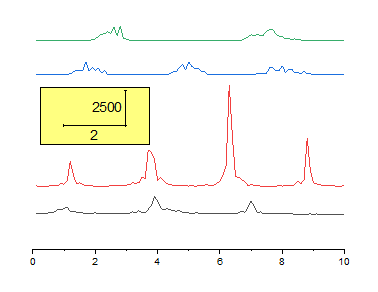
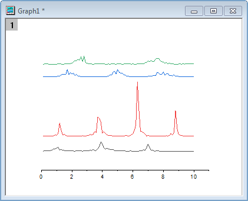
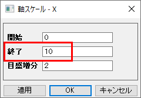
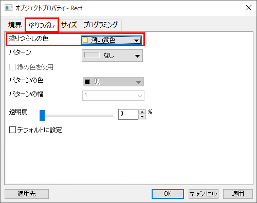
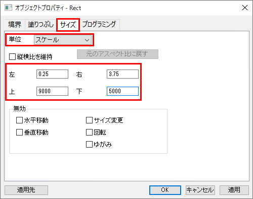
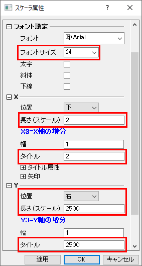
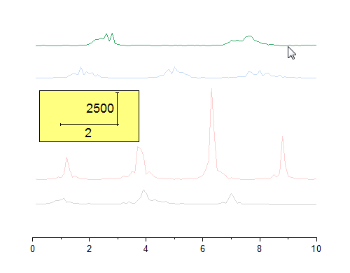

Yオフセット付き積上げ折れ線
StackLine-YOffset
概要
このチュートリアルは、Yオフセット付き積上げ折れ線グラフを作成する方法を示します。
- 
必要なOriginのバージョン: Origin 2015 SR0以降
 | このチュートリアルで紹介する積み上げ折れ線グラフとは別に、サブグループ間でオフセットする積み上げ折れ線グラフを作成することができます。作図の詳細 積み上げタブをご覧ください。
|
学習する項目
- Yオフセット付き積上げ折れ線グラフの作成方法
- 矩形オブジェクトを編集する方法
- 新しいXYスケールを追加する方法
ステップ
このチュートリアルは、チュートリアルデータプロジェクト<Origin EXE フォルダ>\Samples\TutorialData.opjと関連しています。
積み上げ折れ線グラフを作成する
- チュートリアルデータプロジェクトを開き、プロジェクトエクスプローラで、Stack Lines by Y Offsets フォルダを開きます。
- ワークシートBook6Aにある全てのデータ列を選択し、メニューから作図> 基本の2Dグラフ：Yオフセット付き積上げ折れ線を選択してYオフセットの設定された折れ線グラフを作図します。
積み上げ折れ線グラフを編集する
- 以下のオブジェクトを選択し、キーボードのDeleteキーを押してそれぞれ削除します。
- 凡例
- Y 軸
- Y軸ラベル
- Y軸タイトル
- X軸タイトル
- 
- X軸上でクリックし、ミニツールバーの軸スケールボタンをクリックして軸スケール - X 軸ダイアログを開きます。終了を10 に設定します。OKをクリックして、ダイアログを閉じます。
- 
XYスケール追加
- プロット操作・オブジェクト作成ツールバーの四角形ボタンをクリックし、グラフ上に矩形を作成します。
- 四角の領域をダブルクリックして、プロパティダイアログを開きます。以下のように設定を変更します。
- 塗りつぶし タブ
- 塗りつぶしの色 = 薄い黄色
- 
- サイズタブ
- 単位 = スケール
- 左 = 0.25
- 上 = 9000
- 右 = 3.75
- 下 = 5000
- 
- OKをクリックし、オブジェクトプロパティダイアログを閉じます。
- 挿入：XYスケールを選び、新しいXYスケールオブジェクトを作成します。
- スケールオブジェクトをダブルクリックして、スケーラ属性ダイアログを開きます。ダイアログ内の次のプロパティを設定します。
- フォント設定
- フォントサイズ = 24
- X
- 長さ(スケール) = 2
- タイトル = 2
- Y
- 位置 = 右
- 長さ(スケール) = 2500
- タイトル = 2500
- 
- OKをクリックして、スケーラ属性ダイアログを閉じます。
- 作成した矩形オブジェクトにスケールオブジェクトを移動します。
図のオフセットをドラッグで変更する
- 一番上のデータプロットを1回クリックして選択します。
- 
- マウスでドラッグしてデータプロットを移動します。

- Note: あるいは、作図の詳細ダイアログのオフセットタブでYオフセットを変更することも出来ます。